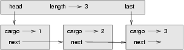

This chapter presents two ADTs: the Queue and the Priority Queue. In real life, a queue is a line of customers waiting for service of some kind. In most cases, the first customer in line is the next customer to be served. There are exceptions, though. At airports, customers whose flights are leaving soon are sometimes taken from the middle of the queue. At supermarkets, a polite customer might let someone with only a few items go first.
The rule that determines who goes next is called the
queueing policy. The simplest queueing policy is called
FIFO, for first-in-first-out.
The most general
queueing policy is priority queueing, in which each customer
is assigned a priority and the customer with the highest priority goes first,
regardless of the order of arrival. We say this is the most general policy
because the priority can be based on anything: what time a flight leaves; how
many groceries the customer has; or how important the customer is. Of course,
not all queueing policies are fair,
but fairness is in the eye of the
beholder.
The Queue ADT and the Priority Queue ADT have the same set of operations. The difference is in the semantics of the operations: a queue uses the FIFO policy; and a priority queue (as the name suggests) uses the priority queueing policy.
19.1 The Queue ADT
The Queue ADT is defined by the following operations:
__init__:- Initialize a new empty queue.
insert:- Add a new item to the queue.
remove:- Remove and return an item from the queue. The item that is returned is the first one that was added.
isEmpty:- Check whether the queue is empty.
19.2 Linked Queue
The first implementation of the Queue ADT we will look at is called a
linked queue because it is made up of linked Node
objects. Here is the class definition:
class Queue: def __init__(self): self.length = 0 self.head = None def isEmpty(self): return (self.length == 0) def insert(self, cargo): node = Node(cargo) node.next = None if self.head == None: # if list is empty the new node goes first self.head = node else: # find the last node in the list last = self.head while last.next: last = last.next # append the new node last.next = node self.length = self.length + 1 def remove(self): cargo = self.head.cargo self.head = self.head.next self.length = self.length - 1 return cargo
The methods isEmpty and remove are identical to
the LinkedList methods isEmpty and
removeFirst. The insert method is new and a bit
more complicated.
We want to insert new items at the end of the list. If the queue is empty,
we just set head to refer to the new node.
Otherwise, we traverse the list to the last node and tack the new node on
the end. We can identify the last node because its next attribute
is None.
There are two invariants for a properly formed Queue object.
The value of length should be the number of nodes in the queue,
and the last node should have next equal to None.
Convince yourself that this method preserves both invariants.
19.3 Performance characteristics
Normally when we invoke a method, we are not concerned with the details of
its implementation. But there is one detail
we might want to know---the
performance characteristics of the method. How long does it take, and how does
the run time change as the number of items in the collection increases?
First look at remove. There are no loops or function calls
here, suggesting that the runtime of this method is the same every time. Such
a method is called a constant-time operation. In reality, the
method might be slightly faster when the list is empty since it skips the body
of the conditional, but that difference is not significant.
The performance of insert is very different. In the general
case, we have to traverse the list to find the last element.
This traversal takes time proportional to the length of the list. Since the runtime is a linear function of the length, this method is called linear time. Compared to constant time, that's very bad.
19.4 Improved Linked Queue
We would like an implementation of the Queue ADT that can perform all operations in constant time. One way to do that is to modify the Queue class so that it maintains a reference to both the first and the last node, as shown in the figure:
The ImprovedQueue implementation looks like this:
class ImprovedQueue: def __init__(self): self.length = 0 self.head = None self.last = None def isEmpty(self): return (self.length == 0)
So far, the only change is the attribute last. It is used in
insert and remove methods:
class ImprovedQueue: ... def insert(self, cargo): node = Node(cargo) node.next = None if self.length == 0: # if list is empty, the new node is head and last self.head = self.last = node else: # find the last node last = self.last # append the new node last.next = node self.last = node self.length = self.length + 1
Since last keeps track of the last node, we don't have to
search for it. As a result, this method is constant time.
There is a price to pay for that speed. We have to add a special case to
remove to set last to None when the last
node is removed:
class ImprovedQueue: ... def remove(self): cargo = self.head.cargo self.head = self.head.next self.length = self.length - 1 if self.length == 0: self.last = None return cargo
This implementation is more complicated than the Linked Queue implementation,
and it is more difficult to demonstrate that it is correct. The advantage is
that we have achieved the goal---both insert and
remove are constant-time operations.
19.5 Priority queue
The Priority Queue ADT has the same interface as the Queue ADT, but different semantics. Again, the interface is:
__init__:- Initialize a new empty queue.
insert:- Add a new item to the queue.
remove:- Remove and return an item from the queue. The item that is returned is the one with the highest priority.
isEmpty:- Check whether the queue is empty.
The semantic difference is that the item that is removed from the queue is not necessarily the first one that was added. Rather, it is the item in the queue that has the highest priority. What the priorities are and how they compare to each other are not specified by the Priority Queue implementation. It depends on which items are in the queue.
For example, if the items in the queue have names, we might choose them in alphabetical order. If they are bowling scores, we might go from highest to lowest, but if they are golf scores, we would go from lowest to highest. As long as we can compare the items in the queue, we can find and remove the one with the highest priority.
This implementation of Priority Queue has as an attribute a Python list that contains the items in the queue.
class PriorityQueue: def __init__(self): self.items = [] def isEmpty(self): return self.items == [] def insert(self, item): self.items.append(item)
The initialization method, isEmpty, and insert are
all veneers on list operations. The only interesting method is
remove:
class PriorityQueue: ... def remove(self): maxi = 0 for i in range(1, len(self.items)): if self.items[i] > self.items[maxi]: maxi = i item = self.items[maxi] self.items[maxi:maxi+1] = [] return item
At the beginning of each iteration, maxi holds the index of the
biggest item (highest priority) we have seen so far. Each time
through the loop, the program compares the i-eth item to the
champion. If the new item is bigger, the value of maxi if set to
i.
When the for statement completes, maxi is the
index of the biggest item. This item is removed from the list and returned.
Let's test the implementation:
>>> q = PriorityQueue() >>> q.insert(11) >>> q.insert(12) >>> q.insert(14) >>> q.insert(13) >>> while not q.isEmpty(): print q.remove() 14 13 12 11
If the queue contains simple numbers or strings, they are removed in numerical or alphabetical order, from highest to lowest. Python can find the biggest integer or string because it can compare them using the built-in comparison operators.
If the queue contains an object type, it has to provide a
__cmp__ method. When remove uses the
> operator to compare items, it invokes the __cmp__
for one of the items and passes the other as a parameter. As long as the
__cmp__ method works correctly, the Priority Queue will work.
19.6 The Golfer class
As an example of an object with an unusual definition of priority, let's
implement a class called Golfer that keeps track of the names and
scores of golfers. As usual, we start by defining __init__ and
__str__:
class Golfer: def __init__(self, name, score): self.name = name self.score= score def __str__(self): return "%-16s: %d" % (self.name, self.score)
__str__ uses the format operator to put the names and scores in
neat columns.
Next we define a version of __cmp__ where the lowest score gets
highest priority. As always, __cmp__ returns 1 if
self is greater than
other, -1 if
self is less than
other, and 0 if they are equal.
class Golfer: ... def __cmp__(self, other): if self.score < other.score: return 1 # less is more if self.score > other.score: return -1 return 0
Now we are ready to test the priority queue with the Golfer
class:
>>> tiger = Golfer("Tiger Woods", 61)
>>> phil = Golfer("Phil Mickelson", 72)
>>> hal = Golfer("Hal Sutton", 69)
>>>
>>> pq = PriorityQueue()
>>> pq.insert(tiger)
>>> pq.insert(phil)
>>> pq.insert(hal)
>>> while not pq.isEmpty(): print pq.remove()
Tiger Woods : 61
Hal Sutton : 69
Phil Mickelson : 72
19.7 Glossary
- queue:
- An ordered set of objects waiting for a service of some kind.
- Queue:
- An ADT that performs the operations one might perform on a queue.
- queueing policy:
- The rules that determine which member of a queue is removed next.
- FIFO:
First In, First Out,
a queueing policy in which the first member to arrive is the first to be removed.- priority queue:
- A queueing policy in which each member has a priority determined by external factors. The member with the highest priority is the first to be removed.
- Priority Queue:
- An ADT that defines the operations one might perform on a priority queue.
- linked queue:
- An implementation of a queue using a linked list.
- constant time:
- An operation whose runtime does not depend on the size of the data structure.
- linear time:
- An operation whose runtime is a linear function of the size of the data structure.
19.8 Exercises
- Write an implementation of the Queue ADT using a Python list. Compare the performance of this implementation to the
ImprovedQueuefor a range of queue lengths. - Write an implementation of the Priority Queue ADT using a linked list. You should keep the list sorted so that removal is a constant time operation. Compare the performance of this implementation with the Python list implementation.